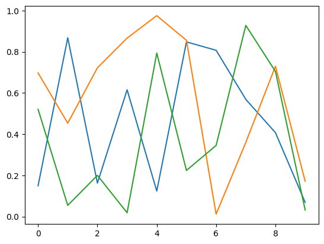
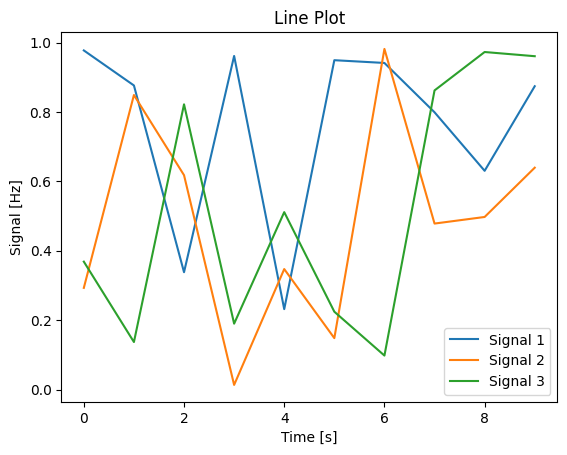
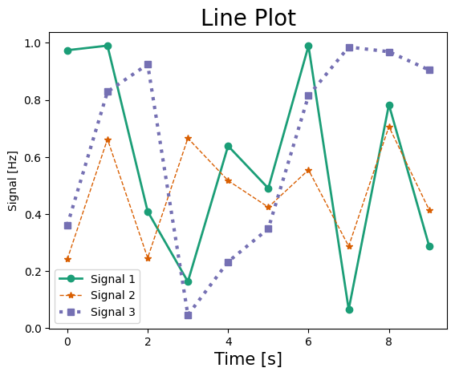

Making comparisons: line plots#
A basic line plot is a simple yet powerful tool to display changes over a continuous interval or time period. It’s a great choice for tracking trends and patterns, making it invaluable in a variety of research fields. While the default settings in many plotting libraries, including Matplotlib, provide a quick and easy way to generate a line plot, they may not always be the optimal choice.
In this session, we are going to build a basic line plot with randomly generated data, and discuss how best to tweak features such as linestyle and colour to make the figure more readable and effective.
Tip
It’s a good idea to type the example code out in your notebook as opposed to copying and pasting. This will help you get used to the syntax and will allow you to improve your skills more rapidly.
Part 1: building a plot using the default settings#
We’re going to start off by building a plot using the default settings provided by matplotlib, then discuss why these might not always be the best option.
Creating some random example data#
In the same way we did for the previous scatter plot, we are going to create some random example data to populate our line plot. First, we need to import matplotlib.pyplot and numpy, as we did in the previous example. Use the dropdown hint if you are stuck.
Import the required libraries
Import matplotlib and numpy as you did in your first plot:
import matplotlib.pyplot as plt
import numpy as np
Instead of creating a list of x data with corresponding y values, we are going to create some time series data.
First, we will create the variable time, which will vary from 0 - 10 seconds in 1 s intervals; then we will create 3 “signal” variables which will be lists of associated random numbers at each time (also 10 values):
# create example random data
time = np.arange(10)
signal_1 = np.random.rand(10)
signal_2 = np.random.rand(10)
signal_3 = np.random.rand(10)
Check what these different variables look like by running a cell containing either just the variable name, or print(variable_name).
Initialise your figure#
This is the exact same as for the scatter plot in the last session:
# Create a figure and axes objects
fig, ax = plt.subplots()
This will be the starting point for almost all of your plots, unless you are doing ery unusual gridded layouts.
Plot your data#
Now, instead of plotting the (x, y) random pairs using the scatter function as
we did in the previous plot, we are instead going to plot the pairs (time, signal_1), (time, signal_2) and (time, signal_3) using the plot function:
ax.plot(time, signal_1)
ax.plot(time, signal_2)
ax.plot(time, signal_3)
When you run this code, you will notice that matplotlib automatically assigns a different colour to each line so that the different series can be differentiated if you add a legend. It should look something like this:
 |
|---|
A simple lineplot without legend, axes labels or a title. Alt text: A lineplot with three series shown in orange, green and blue lines. X values increase from 0–10, while y values for each series vary randomly between 0–1. |
This plot now needs axes labels and a legend. We’re going to pretend that this data represents some sort of signals recorded, who’s frequency (unit = Hertz) changed over time (unit = seconds). Add labels as you did previously:
# Set title and labels
ax.set_title('Line Plot')
ax.set_xlabel('Time [s]')
ax.set_ylabel('Signal [Hz]')
In order to add a legend, we need to first label the data by adding label="data name" into the arguments of the plot function:
# Scatter plot
ax.plot(time, signal_1, label="Signal 1")
ax.plot(time, signal_2, label="Signal 2")
ax.plot(time, signal_3, label="Signal 3")
Then, we can call the legend function which automatically collects any labelled objects in the axes and displays them:
# Add a legend
ax.legend()
 |
|---|
A simple lineplot with a legend, axes labels and a title. Alt text: A lineplot with three series shown in orange, green and blue lines. X values increase from 0–10, while y values for each series vary randomly between 0–1. The x-axis is labelled “Time [s]” and the y-axis is labelled “Frequency [Hz]”. |
Note that matplotlib attempts to estimate the best placement for the legend object so that it is overlapping the least number of datapoints possible.
Part 2: Changing default settings#
What are some issues with this plot?
The only feature distinguishing the different series is line colour. This could pose an issue if the colours are not easily distinguishable, especially if your audience has any colour-related vision difficulties, or if your figure is printed in greyscale.
We can use additional features to distinguish the different series, including:
Line style
Line thickness
Marker style
Depending on the context that the figure is being used in, the font size and line thickness on the plot might be too big or small; this should be changed depending on whether the figure is being used in a journal article, a talk or a poster.
Changing appearance of the line#
We can easily change the appearance of our plot by modifying the original plot function call and adding in some optional arguments.
ax.plot(time, signal_1, label="Signal 1", APPEARANCE OPTIONS GO HERE)
Before you edit your figure
Instead of editing your original figure, copy the code into a new cell and edit this new copy: this allows you to compare and contrast the changes you made with the default settings.
We can start with colour choice: the colour of the plot line can be changed with the argument color="blue", or some other colour name. Note the American spelling! See the list of named colours that can be used in this way. You can also use colour hex codes, like color='#1b9e77' to pick more specific colours. Lets use the ColorBrewer webapp to select a colour scheme for our plot.
Additionally, we can use the arguments linewidth=1, linestyle='-', and marker="*" to change the line thickness and marker icon respectively; see the plot documentation to see the options available.
# Scatter plot with different line colors, thickness, and markers
ax.plot(time, signal_1, label="Signal 1", color='#1b9e77', linewidth=2, linestyle='-', marker='o')
ax.plot(time, signal_2, label="Signal 2", color='#d95f02', linewidth=1, linestyle='--', marker='*')
ax.plot(time, signal_3, label="Signal 3", color='#7570b3', linewidth=3, linestyle=':', marker='s')
Changing font size#
Fontsize can also be changed easily, through the fontsize argument in the set_title, set_xlabel, and set_ylabel functions:
# Set title and labels with different font sizes
ax.set_title('Line Plot', fontsize=20)
ax.set_xlabel('Time [s]', fontsize=15)
ax.set_ylabel('Signal [Hz]', fontsize=10)
Your figure should now look something like this:
 |
|---|
Caption Alt text: here |
Changing appearance of plots through external libraries#
In addition to tweaking each individual setting for this plot, we can also call in a different library that will change a range of settings in one go. One of the most popular plotting libraries, especially for creating statistical plots, is seaborn. We’re just going to show you how to use seaborn to change the appearance of you line plot in this session; we will use the module more extensively in later sessions to design plots.
Import the seaborn package alongside your other import statements:
# Importing necessary libraries
import matplotlib.pyplot as plt
import numpy as np
import seaborn as sns
Seaborn context#
Let’s see what seaborn’s default settings look like: either copy your original plot script (without the edits to line style or font size), or copy this example code into a new cell:
# create example random data
time = np.arange(10)
signal_1 = np.random.rand(10)
signal_2 = np.random.rand(10)
signal_3 = np.random.rand(10)
# Create a figure and axes
fig, ax = plt.subplots()
# Scatter plot
ax.plot(time, signal_1, label="Signal 1")
ax.plot(time, signal_2, label="Signal 2")
ax.plot(time, signal_3, label="Signal 3")
# Add a legend
ax.legend()
# Set title and labels
ax.set_title('Line Plot')
ax.set_xlabel('Time [s]')
ax.set_ylabel('Signal [Hz]')
There are a few general ways seaborn can generally edit the appearance of our plots, without defining individual changes. The first is by setting the context of the plot: where the plot is going to be displayed. The set_context function can be passed the arguments paper, notebook, talk, poster.
Put this line in a cell below your import statements and run it, then run the cell with your plotting code:
sns.set_context("notebook")
Note
Setting the seaborn context will effect every plot you run after the cell with set_context in it is run. In order to undo this, delete or comment out the line with the set_context function, and add a line with plt.rcdefaults(). Run this - any plot run after this will now have the default matplotlib settings again.
The notebook argument is the default, and so the appearance should not change. Try the different contexts and see how they change the appearance of your plot.
Challenge
How does changing the argument of set_context change the appearance of the plots where you have already manually adjusted settings?
Seaborn styles#
In addition to controlling the general sizing of features in your plot, seaborn additionally has a selection of aesthetic “styles”. These can be set through the set_style function. As with set_context, this will affect all subsequent plots, and should be included with the other import statements so it’s easily findeable. Just add the following line of code and re-run your basic default plot:
sns.set_style("whitegrid")
A selection of different styles are available, including darkgrid, whitegrid, dark, white, ticks. Try these different themes on both your basic plot and modified plot to see how they affect your figures.
Challenge
When might a grid be useful in your plot?
Seaborn palettes#
Instead of changing individual coloured lines or datapoints on your plot, you can change the colour palette being used through the seaborn set_palette function (see the docs here).
Challenge
Try different seaborn palettes in the set_palette function
Need a hint?
Add this line in a cell, then run your plots. Vary "colorblind" with some of the other palettes listed in the example section here:
sns.set_palette("colorblind")
When do you need to modify the default settings?#
If the plot you have built is just for you to quickly assess your data, and you can do that sufficiently with the default settings available, then that’s fine, you do you. However, if the default settings impact on the readability of your plot, and your intended audience is wider than just you and your immediate collaborators (this includes you in the future too!), then you should consider putting a little bit of time in to ensure your results are communicated clearly.
Key points
While default settings have generally been chosen for sensible reasons, they are not always the best choice to communicate your results
Font aesthetics can be modified manually, or they can be changed en-masse using a library such as
seabornBefore you consider the aesthetics of your plot, ensure that it is legible, accessible and communicates your results in a clear, unbiased way. Then you can consider making it fit with your preferred colour scheme and general aesthetic.